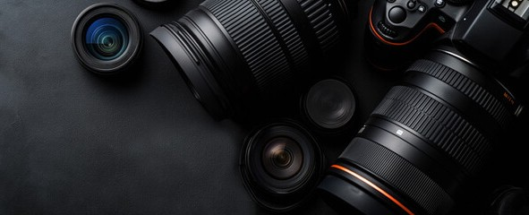

About the name
CamPass combines the words camera and compass. A compass helps people find the right direction, so I used that idea for a website that guides beginners through cameras, settings, and shot choices.

source: Adobe StockI became interested in filming when I was in junior high school. My first short film was based on El Filibusterismo, and I worked as the cameraman. I studied some camera settings, but I still did not know where to start or what I should adjust.
I made CamPass to give beginners a simple place to check camera choices, starter settings, and shot ideas. I also use it to help me remember what I learn while improving my own photography and filming.
CamPass combines the words camera and compass. A compass helps people find the right direction, so I used that idea for a website that guides beginners through cameras, settings, and shot choices.
I want CamPass to make the starting process less confusing. The website does not choose everything for the user. It gives a simple starting point that they can change depending on their camera, subject, and lighting.
Check camera options for photos, filming, travel, vlogging, and action shots.
See simple examples with starter settings and short framing tips.
Try aperture, shutter speed, ISO, focus, and focal length in the camera lab.
Watch beginner lessons about camera settings and filming inside the website.
Compare the main use, type, and simple notes for the listed cameras.
Switch modes to see suggestions that match what you want to create.
CamPass uses dark colors to match the camera theme and help the images and important buttons stand out.

The logo combines a camera and a compass. It uses the same colors as the website and matches the meaning of CamPass.
created using CanvaI check official camera pages for product details. I also use beginner photography guides, filming tutorials, and YouTube lessons to understand the basic settings. I compare the information before adding it to CamPass.
The source of each camera, image, or video is also shown near the content where it is used.
CamPass is a student project based on my personal research and experience as a beginner. I am not a professional photographer or filmmaker. The camera suggestions and settings are only starting points. Results may change depending on the camera, lighting, location, and shooting style.
I am John Santos, a second-year BSIT Web Development student. Photography and filmmaking are hobbies that I want to improve. I am still learning, and CamPass is one of the ways I practice both camera work and web development.
Some features I want to add soon are: